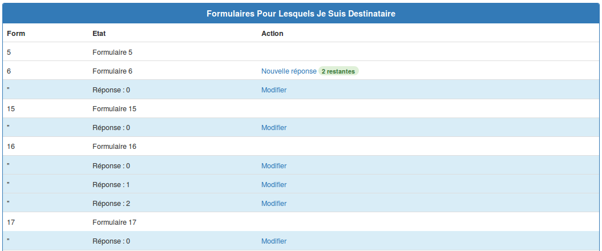

Dans cette zone figure ![[*]](/usr/share/latex2html/icons/crossref.png) est listé l'ensemble des formulaires dont l'utilisateur courant est destinataire, c'est-à-dire ceux pour lesquels il doit répondre.
est listé l'ensemble des formulaires dont l'utilisateur courant est destinataire, c'est-à-dire ceux pour lesquels il doit répondre.
La liste des réponses en cours sont en bleus. Certains formulaires autorisent plusieurs réponses, c'est pourquoi on verra les lignes ``Réponse:0'', ``Réponse:1'', ``Réponse:2'' figure lorsque celles-ci sont initiés mais non validées.
Lorsque toutes les réponses autorisées ne sont pas initiées et/ou envoyées, le nombre restant est indiqué en vert, par exemple le formulaire 6 figure autorise 2 réponses en plus de celle initiée ``Réponse:0'' de la ligne juste en dessous.
Une fois toutes les réponses envoyés, seule la ligne du formulaire est présente, par exemple le formulaire 5 de la figure figure .
Les liens ``Modifier'' permettent la modification d'une réponse déjà commencée. Le lien ``Nouvelle réponse'' permet de commencer une réponse à un formulaire.
| 
figureZone de formualaires reçus |
zz
2015-03-04